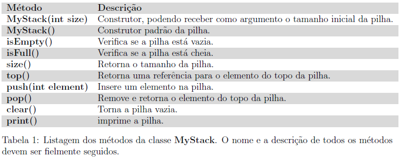
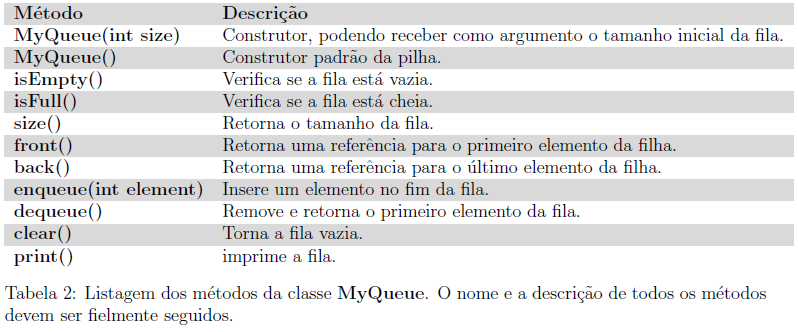

Tarefas
Implementar Pilha
As pilhas são um tipo de container1, especialmente concebidos para funcionar no contexto LIFO (Last In, First Out), onde os elementos são inseridos e extra dos apenas a partir de uma extremidade do Container. A tarefa consiste em criar uma classe MyStack que implementa um pilha de inteiros capaz de empilhar n úmeros inteiros arbitrários. A tabela 1 descreve os métodos públicos que deverão ser implementados.
A classe MyStack deve ser implementada utilizando-se um arranjo unidimensional de inteiros, com capacidade default de 10 elementos. O cliente pode informar um tamanho alternativo passando este valor por parâmetro para o construtor.
Por utilizar um arranjo unidimensional com capacidade de armazenamento pré-determinada, a classe MyStack deve ser capaz de lançar dois tipos de exceções: StackOverow, gerada quando uma inserção excede a capacidade de armazenamento da pilha, e; StackUnderow, gerada quando uma remoção ou consulta é solicitada sobre uma pilha vazia.
Deve-se criar também uma arquivo de teste chamado MyStackTest que teste sua classe de forma sistemática, assegurando-se de que cada método será chamando nas mais variadas situações.

Implementar Fila
Filas são um tipo container, especialmente concebido para funcionar no contexto FIFO (first-infirst-out), onde os elementos são inseridos em uma extremidade do container e removido a partir da outra.
A tarefa consiste em criar uma classe MyQueue que implementa uma fila de inteiros capaz de enfileirar números inteiros arbitrários. A tabela 2 descreve os métodos públicos que deverão ser implementados.
A classe MyQueue deve ser implementada utilizando-se um arranjo unidimensional de inteiros, com capacidade default de 10 elementos. O cliente pode informar um tamanho alternativo passando este valor por parâmetro para o construtor.
Por utilizar um arranjo unidimensional com capacidade de armazenamento pré-determinada, a classe MyQueue deve ser capaz de lançar dois tipos de exceções: QueueOverow, gerada quando uma inserção excede a capacidade de armazenamento da pilha, e; QueueUnderow, gerada quando uma remoção ou consulta _e solicitada sobre uma pilha vazia.
Lembre-se de testar sua classe de forma sistemática, criando um arquivo de teste chamado MyQueueTest.

|